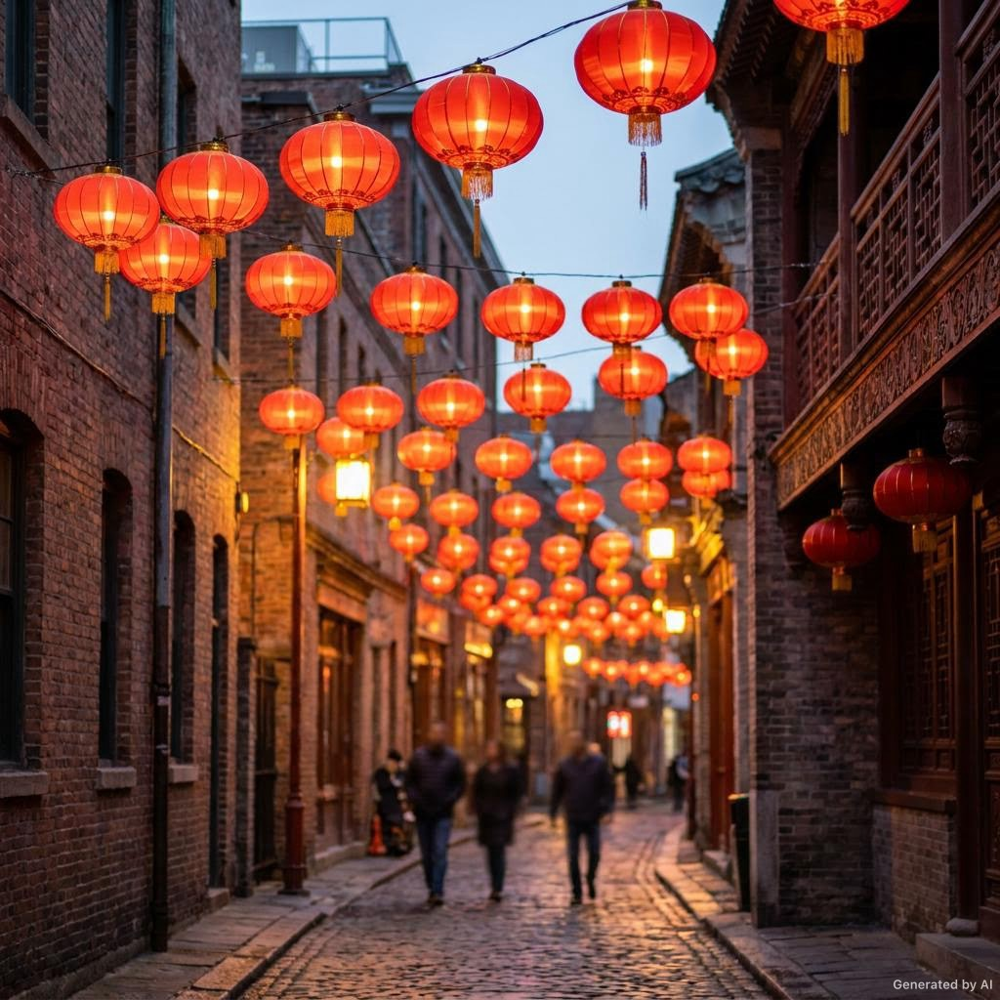
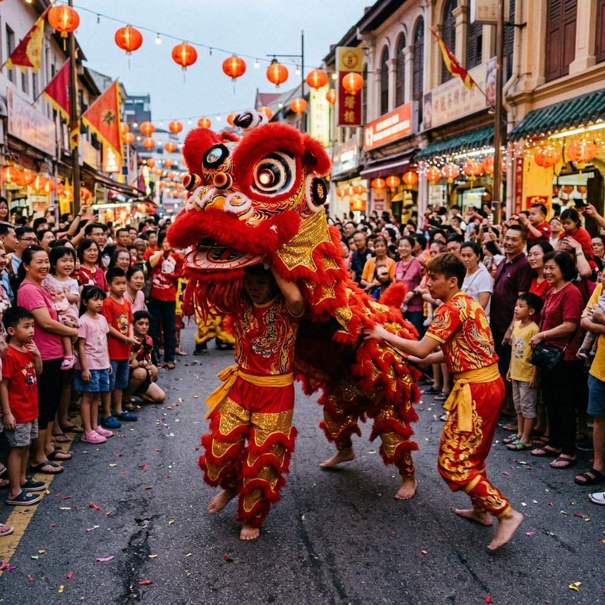
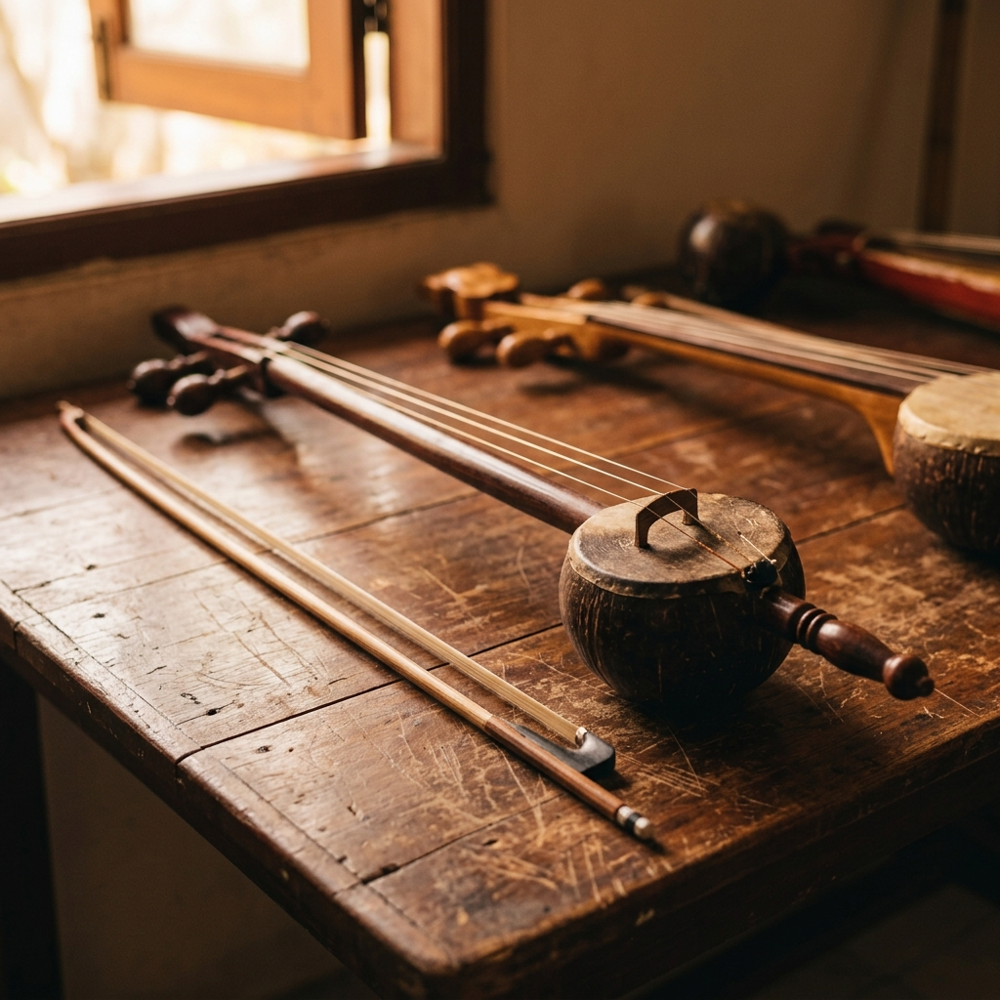
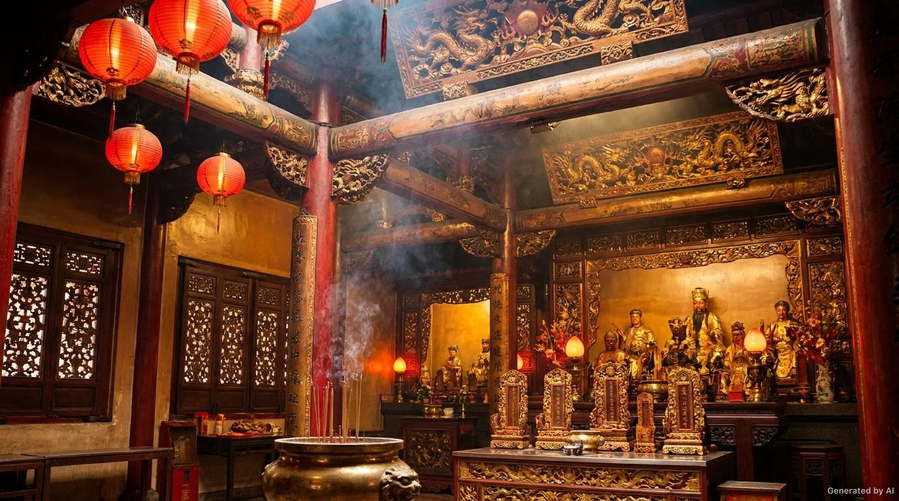

Kelenteng tua, rumah-toko, musik perpaduan, tarian barongsai, sampai perayaan tahunan — inilah warisan hidup orang Cina Jakarta.
Budaya orang Cina Jakarta bukan budaya Tionghoa "asli" yang dibawa utuh, dan bukan pula budaya lokal semata. Ia lahir dari perjumpaan: antara tradisi Tionghoa, Melayu, Betawi, dan pengaruh kolonial. Hasilnya unik — musik yang memadukan alat gesek Tionghoa dengan gamelan, makanan yang menggabungkan dua dapur, dan bahasa Melayu-Betawi yang kaya serapan Hokkien.
Bagian ini merangkum empat hal besar: tempat ibadah, arsitektur, kesenian, dan perayaan.
Bagi komunitas Tionghoa, kelenteng bukan hanya tempat berdoa, tetapi juga pusat kegiatan sosial dan budaya.
Kelenteng tertua Jakarta di Petak Sembilan, Glodok. Dikenal sebagai Kim Tek Ie / Jin De Yuan. Patung utamanya Dewi Kwan Im, dengan puluhan patung dewa-dewi lain.
Berdiri hampir tiga abad di kawasan Petak Sembilan. Menjadi pusat ibadah sekaligus pusat keramaian saat perayaan besar.
Membakar dupa, menyiapkan sesajen, dan membaca doa adalah bagian penting. Warna merah dan emas melambangkan keberuntungan serta kemakmuran.
Kalau kamu berjalan di Glodok atau Petak Sembilan, kamu akan melihat bangunan dua lantai yang berdempetan rapat. Inilah ruko (rumah toko). Lantai satu dipakai untuk berdagang, lantai dua untuk tempat tinggal.
Beberapa kesenian berikut adalah warisan yang masih dipentaskan sampai sekarang.
Musik perpaduan Tionghoa dan Betawi. Alat gesek Tehyan dan Kongahyan berpadu dengan gamelan, gambang, dan kromong.
Tarian singa yang dimainkan dua orang dengan gerakan lincah. Sering tampil saat Imlek dan pembukaan usaha, dipercaya membawa keberuntungan.
Wayang boneka tangan khas Tionghoa. Ceritanya berkisar pada legenda dan kisah klasik, dimainkan di balik panggung kecil.
Ritual di mana seorang peserta "dirasuki" dewa pelindung. Tubuhnya ditusuk tanpa luka sebagai bukti kesaktian dan perlindungan.
Alat musik gesek berdawai dua yang menghasilkan nada khas. Menjadi penanda kuat nuansa Tionghoa dalam Gambang Kromong.
Musik khas kampung Tugu di Jakarta Utara, hasil perpaduan musik Portugis, Melayu, dan Tionghoa — warisan budaya kota ini.
Perayaan menjadi saat paling meriah di kawasan pecinan, terutama di Glodok.
Tahun Baru Tionghoa. Kawasan Glodok dihiasi lampion, pertunjukan Barongsai, dan keramaian pasar. Sejak 2002 menjadi hari libur nasional.
Puncak rangkaian Imlek, jatuh pada hari ke-15. Identik dengan pawai, arak-arakan, dan pertunjukan Tatung.
Hari ziarah ke makam leluhur untuk membersihkan makam dan memberi penghormatan. Sarat nilai kebaktian pada keluarga.
Festival perahu naga, berkaitan dengan kisah Qu Yuan. Ditandai dengan makan bacang dan tradisi berdiri telur.
Festival Musim Gugur, identik dengan kue bulan (mooncake) dan berkumpul bersama keluarga.
Istilah lain untuk tahun baru Imlek. Momen berkumpul, saling memaafkan, dan berbagi rezeki dengan keluarga besar.
Beberapa gambaran suasana budaya dan peninggalan orang Cina Jakarta.

Lampion merah menjadi penanda kawasan, terutama saat perayaan.

Tarian singa yang meriah dan penuh makna.

Alat gesek khas yang memberi warna Tionghoa pada Gambang Kromong.

Tradisi menghormati leluhur dan dewa-dewi.